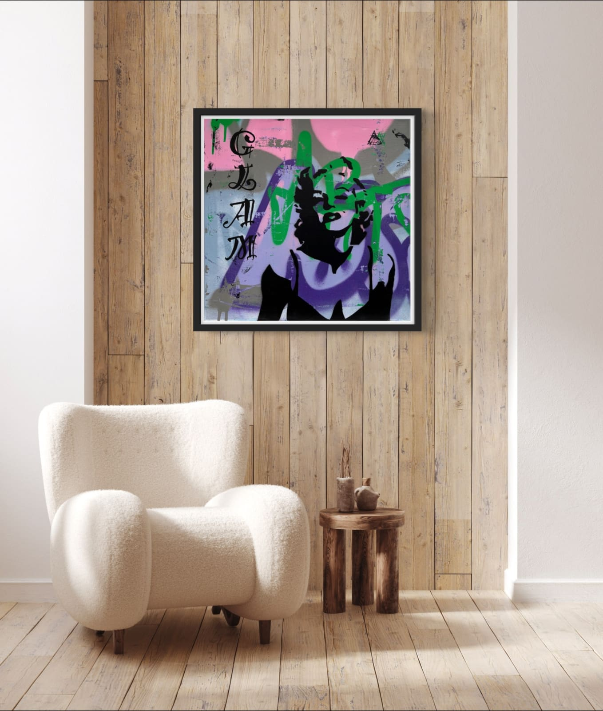
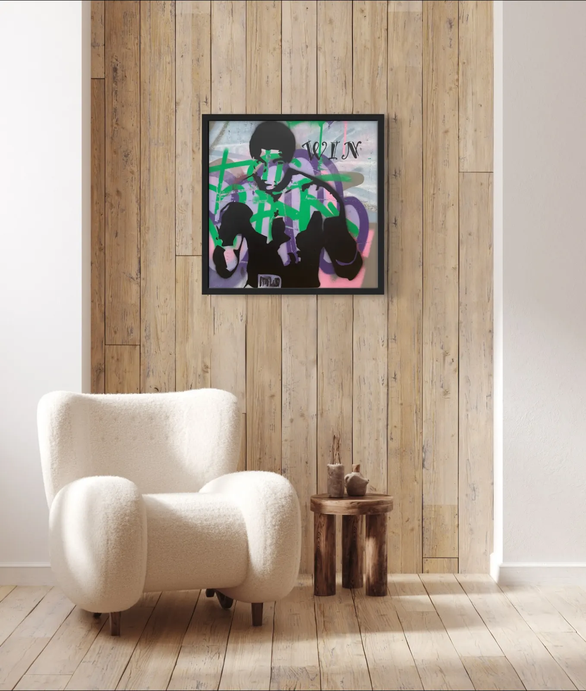
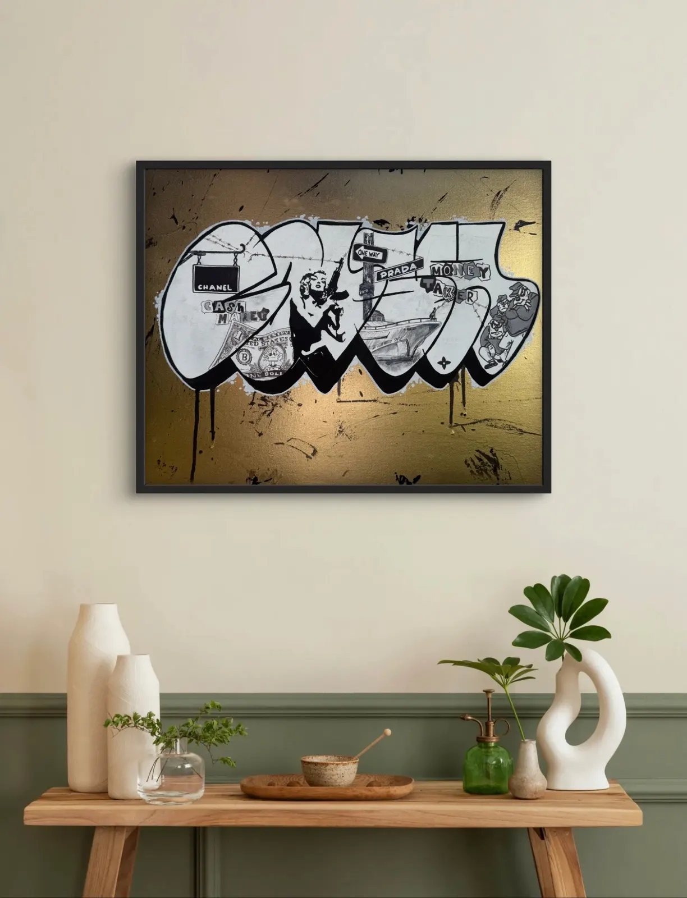
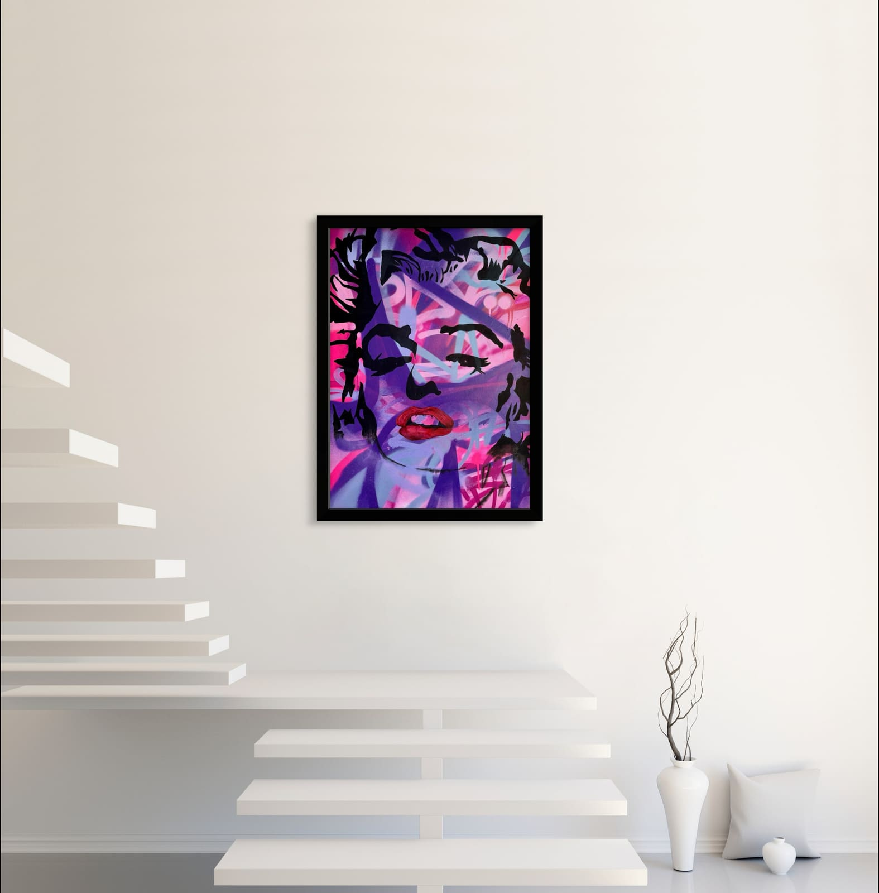
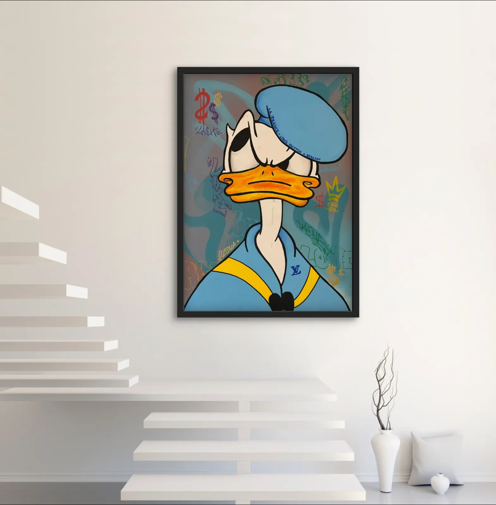
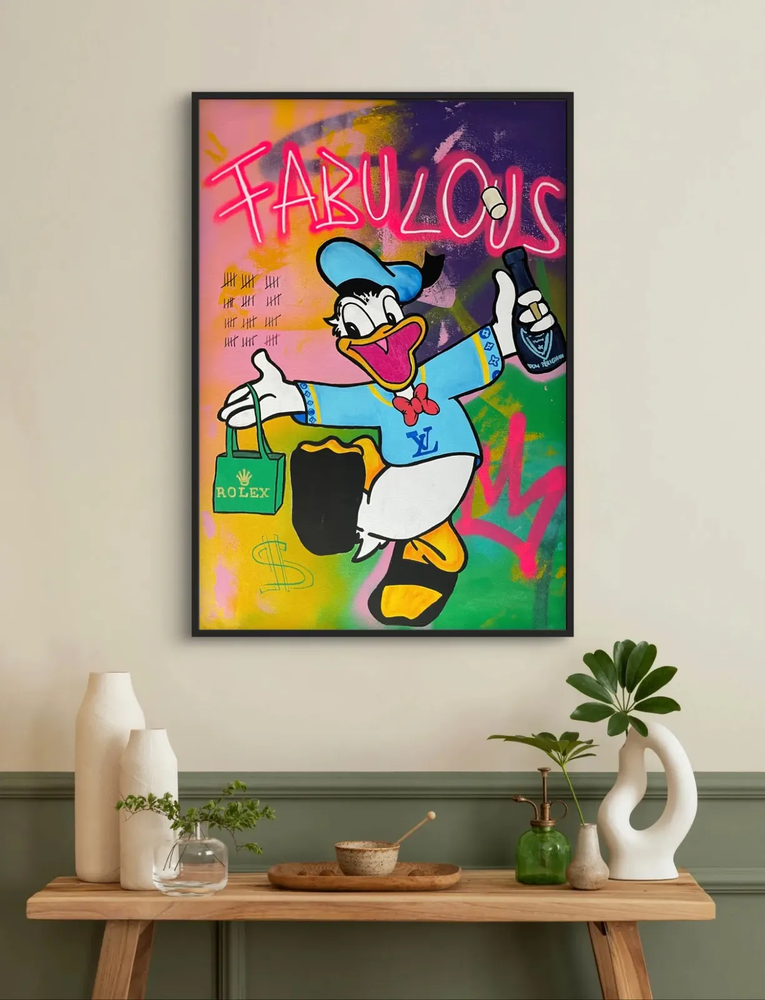
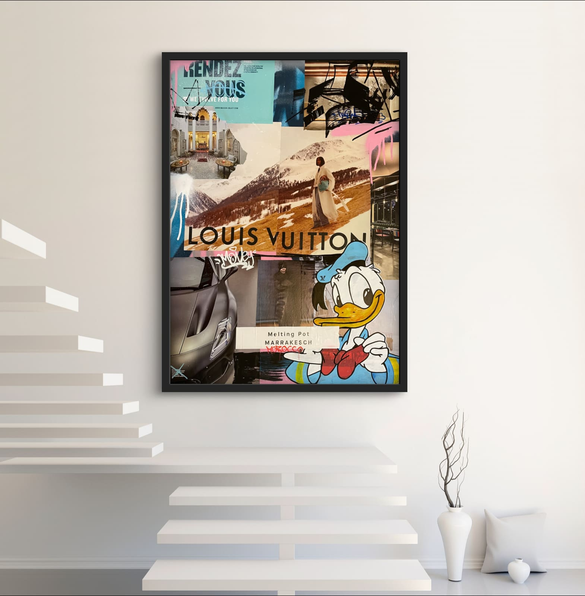

Gallery.
25 hand-painted originals in 8 sizes. Tap a piece for details, a size comparison and enquiries.
40 × 40 cm
Small · 2 works

40 × 50 cm
Compact · 4 works



50 × 70 cm
Medium · 7 works






60 × 60 cm
Square · 4 works


70 × 100 cm
Large · 5 works


80 × 80 cm
Square XL · 1 work
90 × 120 cm
XXL · 1 work
100 × 100 cm
Maxi · 1 work
Interested in a piece?
Price, availability, shipping – I’ll get back to you quickly.